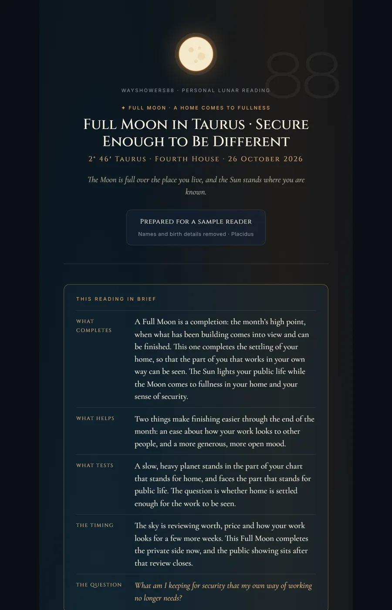
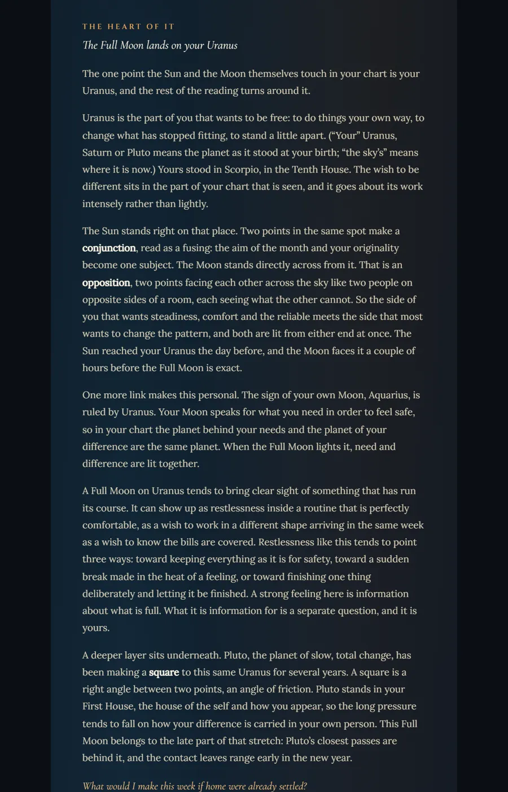
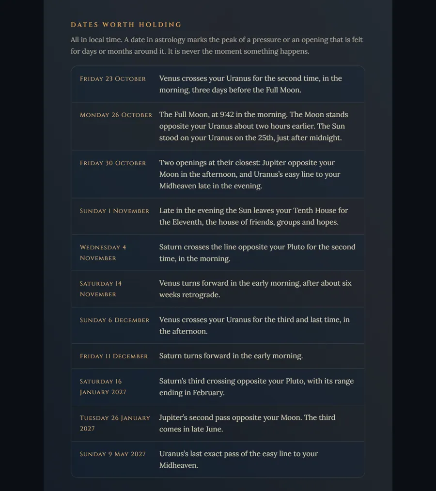

A personal moon reading,
for your sky alone.
The Luminary is a personal New Moon or Full Moon reading. You choose the moon; it is read against your exact birth chart: the area of your life it lands in, and every aspect it makes to your own planets. Composed one chart at a time and sent to you by email.
$33 AUD · two editions · introductory price
How it works
- Choose your moonThe next New or Full Moon, or one that matters to you. Each stays open for three days after it peaks.
- Give your birth detailsDate, time and place, exactly as your birth certificate has them, and the town you live in now.
- Your sky is computedA verified astronomical engine finds where this moon falls in your houses and every contact it makes to your planets.
- Your reading arrivesComposed for your chart alone and sent by email, in good time for your chosen moon.
Why a moon, read for you
Every month the Moon renews and fills. A New Moon is a beginning, the time for setting an intention. A Full Moon is a completion: the month's high point, when what has been building comes into view and can be finished or let go.
The same moon rises over everyone, but it does not land in the same place for everyone. In your chart it falls in one particular house, one area of your life: home, work, money, love, rest. It may also touch planets of your own, and each contact gives that moon a different job. Two people under one Full Moon can be finishing quite different things.
A Luminary reads that one moon in that one chart. It is not a sun-sign horoscope and not a template. It describes what this moon makes available to you and what it asks of you, and leaves the choosing with you.
What the reading holds
About 2,500 words or more, written for someone new to astrology. Every chart term is explained the first time it appears.
- In briefOne page: what this moon begins or completes for you, what helps, what tests it, the timing, and the question it leaves with you.
- Where it landsThe house of your life this moon lights, and what beginning or finishing looks like there.
- The heart of itThe one contact the whole reading turns on, read in full.
- Helps, tests, timingThe other planets in play this month, each given its role: what supports this moon, what tests it, and when the pressure peaks.
- Putting it togetherThe one story the whole sky is telling you this month, not a recap.
- Seeds or releaseFor a New Moon, the seeds worth planting; for a Full Moon, what to release. With a small practice and a mantra of your own.
- At the backThe dates worth holding, in your own local time; the sky behind the reading, for anyone who wants to check the work; and a glossary.
A look inside
Three pages from a recent Full Moon reading, screen edition.



Tap a page to see it full size. From a real reading, shared with permission. The name and birth details have been removed.
The next moons
A moon stays open for orders until three days after it peaks.
- New Moon in Scorpio Monday 9 November Open for orders until Thursday 12 November
- Full Moon in Gemini Tuesday 24 November Open for orders until Friday 27 November
- New Moon in Sagittarius Wednesday 9 December Open for orders until Saturday 12 December
- Full Moon in Cancer Thursday 24 December Open for orders until Sunday 27 December
Dates are given in UTC; your local date may differ by a day.
Questions
Which moon should I choose?
Whichever one is calling you. A New Moon reading suits a beginning: something you want to start or set an intention for. A Full Moon reading suits a completion: something you want to finish, see clearly or let go. If you are unsure, choose the next one. Each moon stays open for orders until three days after it peaks.
Do I need my exact birth time?
The reading is built on your houses, the areas of life the moon lands in, and houses depend on the minute and place you were born. So a birth time matters. The time on a birth certificate or hospital record is best.
If you don't know yours, tick "I don't know my birth time" on the form, and we will contact you about what is still possible before anything is written. More on birth times.
When will my reading arrive?
It is not an instant download. Readings are composed one chart at a time, in the order the moons peak, and yours arrives by email in good time for your chosen moon. A confirmation email follows soon after you pay; if you don't see it, check your spam or promotions folder.
Is this a lunar return reading?
No. A lunar return is the moment, about once a month, when the Moon comes back to the exact place it held when you were born, and a lunar return chart is cast for that moment.
The Luminary reads something different: a New or Full Moon, the shared moment when the Sun and Moon meet or face each other, as it falls in your own birth chart. The sky is the same for everyone; where it lands is yours.
Does it predict what will happen?
No. Astrology here describes what a moment makes available, never what will happen. A reading names the pressures and openings around this moon and the question it asks of you. What you do with them is yours to decide.
Which zodiac and house system do you use?
The tropical zodiac, Placidus houses and the true lunar node: the same as the free birth chart calculator, so you can check your chart there first. If another app shows a planet in a different house, it is usually using another house system; here is why.
What happens to my details?
They travel encrypted to our order system, are used for your reading and nothing else, and are never shared. Payment is handled securely by Square or PayPal, in Australian dollars.
The same moon rises over everyone.
Where it lands is yours.